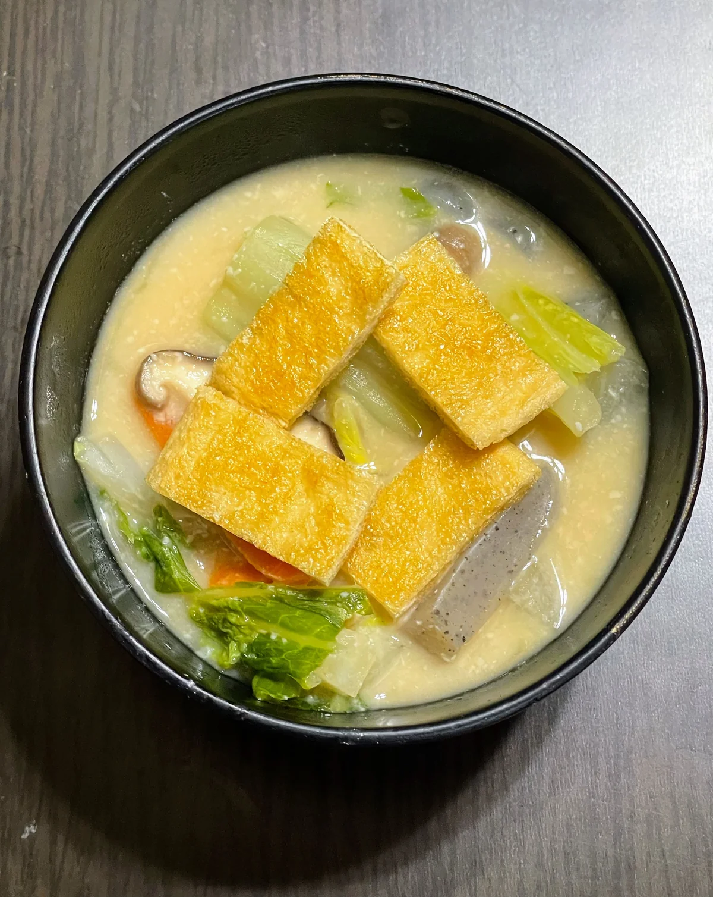
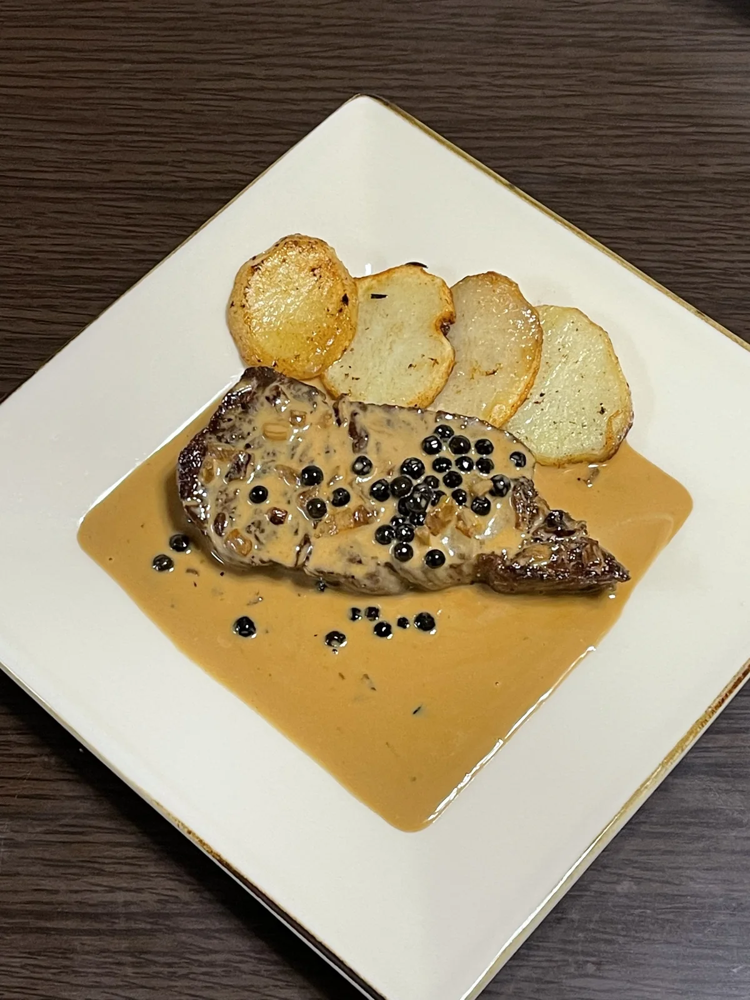
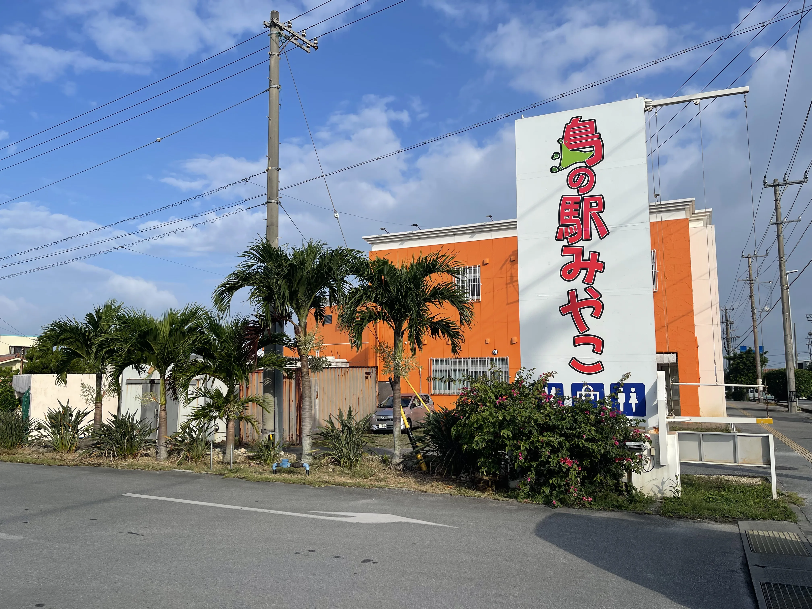

洗車・料理・旅行を中心に更新しています。
ゆるくを合言葉に、洗車しています。
軽く洗っただけでも、しっかりキレイに仕上がっていました。


作った料理やレシピのメモをまとめています。
うまくいった日も、ちょっと崩れた日も記録。
東平安名崎の早朝。灯台と朝日を見て、シギラ黄金温泉へ。
行った場所や食べたものの記録。

朝、島の駅みやこに寄って、知らない名前の果物を買った。
日々の感想や気になったことを、ゆるく残しています。